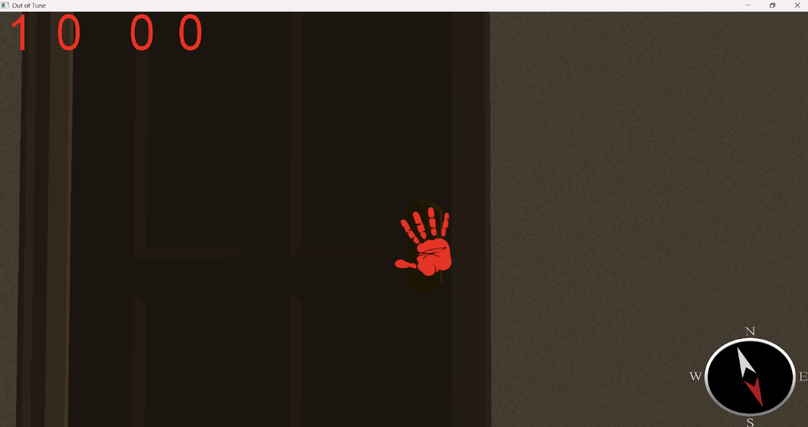

Out of Tune: Weekly Progress Report Week 7 5/12
Group Status
More and more elements of the game is coming together. As for the art and modeling more models are being created. We have a few of the swamp mmodels created already and are being incorporated into the game. The Swamp room game logic is being reworked and new classes are being incorporated while the graphics for the game is being rendered along side. For graphics and UI we have initial shadows for objects being incorporated alongside the lighting incorporations we started on last week. The UI is along the way with a compass and and crosshair hand being rendered. Audio wise we now have an initial version of the audio engine integrated to client side of the game and more sound effects are being created (walking on carpet sounds). Lastly, as part of the last part of the game our final door, the logic for it is implemented we just need to incorporate the physics and graphics with it.
Screenshots
Group Morale
Overall, the group seems optimistic, even if work is slower than we had hoped. Things seem like we should have an MVP shortly, and that seems like it will boost morale
Individual Reports
Art (Jasmine):
What were your contrete goals for the week?
I wanted to finish the lobby room, the swamp room, and work on character models.
What goals were you able to accomplish?
I mostly finished the lobby room, the final door is still a work in progress. I finished the swamp room, but I might come back to it later and change some textures if needed. I also still need to finish the frogs and other items for the swamp room. And I did not work on the character models this week.
If the week went differently than you had planned, what were the reasons? note that this happens regularly…I would prefer you to be aggressive in what you want to try accomplish rather than limit yourself to goals you know you'll easily achieve. so answering this question is more of a reflection on the development process and the surprises you encounter, it's not at all an evaluation.
I think this week was busier for me than last week was, so I didn’t have as many hours to dedicate solely to this project and I’m starting to feel a little burnt out working on walls and floors all the time lol. I think focusing on items will be so much more fun once these room pieces are done. While I did spend a lot of time working on this project, I think a lot of it was focusing on collision boxes which is turning out to be more work than I anticipated, but shouldn’t be so time consuming once all room pieces are done.
What are your specific goals for the next week?
I really really don’t want to work on rooms anymore, therefore I want to be firm in finishing all rooms by this week. However, if it turns out that I need to prioritize other things for my teammates such as the exit door and keys then I will do that instead. I’m also kind of behind my original schedule I think, and I wanted to be working on the character and animation at this point, so starting to feel the pressure more.
Goals:
- Update all hotel rooms to have thicker walls
- Finish clown room (walls and floors and collisions)
- Finish piano room (walls and floors and collisions)
- (ideally from here I can work on character and props for all rooms)
What did you learn this week, if anything (and did you expect to learn it)?
Maybe I should’ve passed on the task of adding collisions to someone else, but at this point I’m almost done with the bulk of it so I want to finish what I started. Round room = wacky collision boxes. No more round rooms.
What is your individual morale (which might be different from the overall group morale)?
Tired of focusing on details like numbers and naming that have to do with adding collision boxes and making rooms, but happy that I should almost be done with that and motivated to finish the last rooms. Happy that I get to see my work get put into the game.
Music (Annie):
What were your contrete goals for the week?
My goal is to get sounds into the game since I got the library in.
What goals were you able to accomplish?
I did attempt to try to get audio into the engine thanks to Helen, William, and Julie’s help! And I got the SFX footsteps for walking on carpet, wood, and lily pad
If the week went differently than you had planned, what were the reasons? note that this happens regularly…I would prefer you to be aggressive in what you want to try accomplish rather than limit yourself to goals you know you'll easily achieve. so answering this question is more of a reflection on the development process and the surprises you encounter, it's not at all an evaluation.
I thought I would have time to have the game play at least but I was busy from work and other projects.
What are your specific goals for the next week?
Draft a track for the clown/carnival room
What did you learn this week, if anything (and did you expect to learn it)?
I learned that C-make files are hard and should leave that up entire to Julia in the first place. However I did try putting it on myself to see if I could do it.
What is your individual morale (which might be different from the overall group morale)?
Feel like I really need to focus on creating as many assets as I can now that the audio library is now integrated into the engine.
Graphics (Gabriel):
What were your contrete goals for the week?
My concrete goals were:
- Finish implementing the timer display
- Refactor the UIElement class into an AnimatedUIElement and a StaticUIElement for elements that won’t be updated (texts, fixed images, etc.)
- Figure out a way to let transparent elements “stack” without erasing each other
- Create a canvas object that manages the positions, visibility and drawing order of all UI elements on screen
- Create a compass that points towards the world Z axis
What goals were you able to accomplish?
Almost all of them have been accomplished as of writing this. I finished the timer display and refactoring the UIElement into 2 distinct classes ended up being unnecessary. Additionally I learned that disabling writing to the depth buffer (glDepthMask(GL_FALSE)) fixes the transparent “overwriting” issue. I still don’t fully understand why that’s the case, but from what I’m getting, depth masks (when used improperly) can assign the depth of a transparent pixel to be a front-most pixel and, thus, “cover” pixels that are placed behind it. Disabling depth masks lets me place front-ground objects by drawing them later, and the pixels aren’t “overwritten”. I also managed to create a canvas object, which lets me quickly adjust the positions of all elements on screen without having to change each file one-by-one. I still want to change the canvas object so that it’s more flexible and usable on different screens aside from the main game (main menu, game over screen, waiting for players, etc). The compass is almost done. Fixing the transparency issue let me stack a compass “hand” texture on top of the compass “frame” and rotate it independently. As of now, the hands are able to rotate, but they don’t point to a fixed axis yet.
If the week went differently than you had planned, what were the reasons? note that this happens regularly…I would prefer you to be aggressive in what you want to try accomplish rather than limit yourself to goals you know you'll easily achieve. so answering this question is more of a reflection on the development process and the surprises you encounter, it's not at all an evaluation.
This week went pretty well. I don’t recall any major problems, although I think I should have designed the canvas object to be a more dynamic object that can be added to instead of a fixed set of elements.
What are your specific goals for the next week?
- Finish the compass
- Create a crosshair that only shows up when player looks at interactable object
- Refactor Canvas so that it may be reused for different screens aside from the game world
What did you learn this week, if anything (and did you expect to learn it)?
I reinforced my understanding of type casting, interfaces and inheritance in C++. Some of these concepts were already familiar to me in other languages, so it was good to brush them off in C++. Planning what should be an interface, a class and a subclass was a very educational exercise in object oriented programming and creating maintainable code. I also learned how to use shaders to manipulate the rotation of an object.
What is your individual morale (which might be different from the overall group morale)?
Overall I feel like UI is still in a good spot. I’ll need to talk to the overall programming people to figure out a couple of details for the next steps (namely how interactable items are being implemented and what screen are we planning to have in the game).
General Game Implementation and Mini Games (William):
What were your contrete goals for the week?
What goals were you able to accomplish?
If the week went differently than you had planned, what were the reasons? note that this happens regularly…I would prefer you to be aggressive in what you want to try accomplish rather than limit yourself to goals you know you'll easily achieve. so answering this question is more of a reflection on the development process and the surprises you encounter, it's not at all an evaluation.
What are your specific goals for the next week?
What did you learn this week, if anything (and did you expect to learn it)?
What is your individual morale (which might be different from the overall group morale)?
General Game Implementation and Mini Games (Ravi):
What were your contrete goals for the week?
My concrete goals were to help finish the minigame1, start minigame2, and start thinking about how to integrate graphics with the class files.
What goals were you able to accomplish?
I was able to implement a lilypad class, and I worked through a death mechanic of the first minigame, with the lilypad implementing our customCollision function that Brandon implemented. I also learned a lot more from Julie’s code and we had some good discussions about how things work.
If the week went differently than you had planned, what were the reasons? note that this happens regularly…I would prefer you to be aggressive in what you want to try accomplish rather than limit yourself to goals you know you'll easily achieve. so answering this question is more of a reflection on the development process and the surprises you encounter, it's not at all an evaluation.
This week did go differently than I had planned. I didn’t get as much work done as I had hoped. I had an incredibly busy schedule with work and family, so I didn’t finish all my work I had planned.
What are your specific goals for the next week?
Next week, I hope to finish minigame1, get the graphics implemented with it so we can actually see the gameplay, and start on minigame2.
What did you learn this week, if anything (and did you expect to learn it)?
I learned more about the rigidbody work that Brandon has done and the codespace in general. I also learned a lot more about Julie’s code on the client/server communication.
What is your individual morale (which might be different from the overall group morale)?
Although I didn’t get as much done as I had hoped, I am still feeling pretty good about the project. I think now that we have almost everything in place, things are going to be much quicker. I also am feeling good now that my schedule will be more free.
Physics (Brandon):
What were your contrete goals for the week?
My concrete goals for the week were to organize our map generation and Blender dimension processing scripts, creating a file that compiles and executes each script according to the operating system being used, and implementing capability for custom collisions by allowing rigid bodies to reference its parent class and call a customizable collision through an interface.
What goals were you able to accomplish?
I was able to mostly complete my goals. The interface implementation was concise and simple, and has yet to be tested with the minigames (the reason why it was needed). However, the scripts were more difficult to handle, especially because of cross platform compatibility and linking issues. Compile commands can look a lot different between Mac and Windows, and the linking makes them even more different. One of the scripts uses assimp, glm, and other libraries for computation and processing, and some libraries in the repository only have references, such as assimp. Because of that, the actual source code is generated by building the CMake file, and the file structure of the build directory isn’t clear. I did manage to get some sort of linking, but I kept running into more problems, and I ultimately decided to commit to WSL and MacOS for the compilation commands, as well as build on the assumption that the user downloads the necessary libraries. This assumption is somewhat safe because it is more of quality of life for the developers, so there’s no need for seamless integration and cross platform compatibility that the game has.
If the week went differently than you had planned, what were the reasons? note that this happens regularly…I would prefer you to be aggressive in what you want to try accomplish rather than limit yourself to goals you know you'll easily achieve. so answering this question is more of a reflection on the development process and the surprises you encounter, it's not at all an evaluation.
I feel like I am not doing much at the moment. I finished a majority of the foundational physics, so I am looking for things to do outside of just ad hoc creating new tasks or implementing subtle functionalities for the other teams. Then again, physics is past the stage of implementation and now more on iteration. Iterations would be quality of life, implementing physics for the minigames, and bug fixing. I can’t really do much because we are still in the process of implementing the Swamp game. The physics for the other games should also be theoretically simple. The Red Light, Green Light game just needs a cannon ball that stops when it hits a wall, and calls a custom collision when hitting a player. The Piano game just needs to lower the keys and play a note when stepped on, also implemented by custom collision.
What are your specific goals for the next week?
My specific goals for next week include adjusting the bounding box sizing based on rotation, further minigame physics implementation and bug fixing, and any other general programming help for the next minigames. I will need to meet with my team to figure out any deliverables that I can focus on.
What did you learn this week, if anything (and did you expect to learn it)?
Other than developing in Windows is pretty garbage (in terms of scripting), I would say I learned that having a clear plan and full timeline is extremely useful. I think it is better to have too much to do rather than too little to do, because I am kind of feeling slightly useless. My development has slowed a lot this past week because I just don’t know what I can work on. Working on physics was so fun.
What is your individual morale (which might be different from the overall group morale)?
I am feeling somewhat bored. I am still excited to see how this project will turn out and believe we will be successful, but individually I feel like I am not doing anything anymore. My tasks this past week were so simple, I feel like I could have fit in a more complex task for me to work on. Like I said, I feel like I am trying to create issues to solve, even when it might not be necessary.
General Game Implementation and Mini Games (Helen Lin):
What were your contrete goals for the week?
The goal was to incorporate our new object classes into the swamp and get more of the swamp class finished up
What goals were you able to accomplish?
Things didn’t go quite as planned this week as I had a midterm to study for as well as encountering some bugs and problems with the game. I was able to incorporate the object class in the the server side of swamp however after Tuesday’s Meeting and discussion we realized we need to add interfaces to the objects to connect the Rigid bodies to the objects, and also determined a separate lilpad class since they need their own special collision handler which after communication Brandon took over, which I delayed swamp incorporation evern more. But I was able to get an initial swamp setup PR with the initial client server communication merged in.
If the week went differently than you had planned, what were the reasons? note that this happens regularly…I would prefer you to be aggressive in what you want to try accomplish rather than limit yourself to goals you know you'll easily achieve. so answering this question is more of a reflection on the development process and the surprises you encounter, it's not at all an evaluation.
This week’s work definitely went differently than planned. I had less time to spend on CSE 125 because of midterms but also cause Thursday we encountered a minor bug in the code where in the first approximately 10 seconds of the game start up the player’s movement input and the actual response is delayed in that when you move the player it takes about 1 second to actually render the movement on the client side. Thus also only occurred on the lab computers. I spend most of the time going to the git history and determining where the problem occurred and was able to pin point it to the swamp game state function I added namely the boost line to send the information over. If that line is commented out then we wouldn’t have as sever of the problem. There is still an input delay even before but it was like for 2 to 3 seconds not 10. We decided to pivot the game state update for the swamp to only send messages on when to drop the lily pad. This it self is also an optimization, which I didn’t take this approach before hand because of the complexity of collision response which we have figured out now. I also spend most of my time Thursday helping Annie out with setting up her FMOD, figuring out how to get it to compile. We did get it to a state where it compiled but it broke the client side code. We ended up reaching out to Julie since it was CMAKE stuff which she had much more experience and she was able to get it working.
What are your specific goals for the next week?
Now that I’m done with midterms and the new Object and Ridigbody interface for custom collision response are in, I plan on catching up with what I missed out this week on the swamp progress. The goal is to change up the game state update for the swamp, check that the input delay but isn’t there any more, create lily pad class, set up an initial class creation on the client side that doesn’t include the rendering since Julie said she’ll take over the rendering/Graphics portion of the swamp
What did you learn this week, if anything (and did you expect to learn it)?
Didn’t expect to work with and learn a bit about cmake while helping Annie out with trying to get FMOD to compile. Another thing I learned this week was more git controls which I wasn’t expecting. Checking out specific commits digging through the history and figuring out where the problem came from.
What is your individual morale (which might be different from the overall group morale)?
Not quite happy about my progress but I feel better conceptually wise on what’s to come since a lot of the confusing about the code and the structure from previous weeks are more or less cleared up. Now I feel like I just need the time to sit town and churn out the code.
Graphics & Network (Julie):
What were your contrete goals for the week?
My main goals for the week were to implement point light shadows and start working on the lobby system.
What goals were you able to accomplish?
I implemented point light shadows by creating a depth cubemap to store depth information in all directions from the light source. I used a geometry shader to render the scene from the light's perspective in six directions, sending each triangle to all six sides of the cubemap in a single pass. In the model fragment shader, I also implemented Percentage Closer Filtering (PCF) to make the shadows appear softer and more natural.
Currently, the system uses one active point light per room to cast shadows, even if more lights are present. I chose to use only the shadow from the light in the current room where the player is, but I'm considering rendering shadows in nearby rooms as well (e.g. if doors are open and other rooms are visible). I'll keep adjusting based on how it looks and performs.
Beyond shadows, I added the FMOD dependency for audio and updated the CMake files accordingly. Also, I added a couple of directional lights to improve the overall visuals. I also refactored the Esc key handling to use a GLFW callback for toggling mouse lock instead of polling. Additionally, I added a bounding box toggle (Shift + B)–when enabled, only bounding boxes are shown; when disabled, only the models are rendered. The arrow keys and WASD input still use polling for smoother movement.
I also started working on the swamp room and adjusted some fragment shader values to better match its mood and atmosphere. It's still a work in progress.
For the lobby page, I decided to hold off on the networking part until Gabriel finishes the basic UI. Since it includes user actions like choosing characters and pressing “ready,” having the UI first will make it much easier to implement and test.


If the week went differently than you had planned, what were the reasons? note that this happens regularly…I would prefer you to be aggressive in what you want to try accomplish rather than limit yourself to goals you know you'll easily achieve. so answering this question is more of a reflection on the development process and the surprises you encounter, it's not at all an evaluation.
I thought I would have more time for the project this week, but ended up having limited time due to other responsibilities and a family event. That said, I know I could've made more progress if I had pushed myself harder. I learned that time can slip away quickly if I'm not actively managing it, and I want to stay more conscious of that going forward.
What are your specific goals for the next week?
There's one part of the code that might cause issues later, so I'll fix it first.
Currently, the bounding box mode toggles between showing models or their bounding boxes, but the players are always visible. I plan to update it so that player bounding boxes are also rendered dynamically, using their minCorner and maxCorner values. Brandon will work on updating those values in real time as players rotate (to improve collision detection), so I'll make sure the visual representation reflects that.
After that, I'll continue improving the swamp room–I'm using a separate fragment shader and experimenting with shadows and lighting specific to that room to match the atmosphere. I'll also make the swamp water look transparent.
Jasmine plans to add light-based items, so I'll implement a bloom effect to make them glow visually and position point lights accordingly.
I'll mainly be finalizing the shadows and lighting setups for both the swamp room and the hotel room. I'll also start thinking about how animations will work and how dynamic map generation will tie into the graphics–for example, if two rooms are next to each other, which one should own the shared door, and how that might affect the room layout.
What did you learn this week, if anything (and did you expect to learn it)?
I realized ten weeks is actually pretty short. It's time to lock in.
What is your individual morale (which might be different from the overall group morale)?
I really enjoy working on this project and love collaborating with my team. I want to get a lot done this week, because the last thing I want is to be stressed or rushed in the final week. I'm fully aware of how much work we still have left, and I'm motivated to work hard.